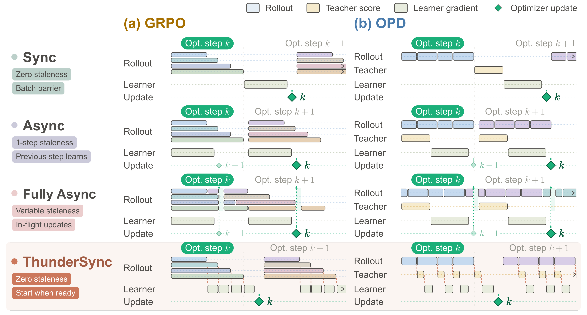
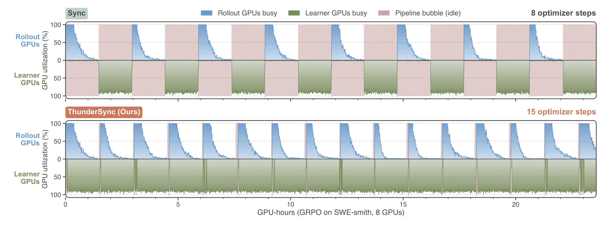

核心判断：ThunderSyncRL 观察到 agent RL 的 rollout 长度不均会造成 learner 等待。它把轨迹梯度拆成可独立释放的 objective source，在不跨版本混用 policy 的前提下，让同一批次的反向计算提前流水化，并用 optimizer barrier 恢复同步更新。
问题与动机
完全异步会引入 policy lag；完全同步又让短轨迹和已完成 turn 等待最长 rollout。
方法框架
- GRPO 将轨迹梯度与 group reward 系数分开，先准备可合并的充分统计量。
- OPD 以 turn 为粒度释放 teacher 监督；ready queue 管理已就绪梯度工作，barrier 保证一次 update 的语义不变。
- 用 release time、learner tail 和轨迹异质性分析速度上界。
实验与核心结论
- 论文报告在固定性能下减少 GPU-hours，并在 Terminal Bench 4.0 transfer 上保持能力；核心论断是 update-equivalent，而非近似异步。
- 收益随 batch size、rollout wave 和轨迹长度异质性变化，短尾或 learner 受限时加速会下降。
- 作者仓库截至 2026-10-08 仍写着 code release is on the way，当前结论来自论文与伪代码。
调度框架

同步训练的 pipeline bubbles

价值与边界
它解决的是 agent RL runtime 调度而非新的 reward；复现应先验证固定 batch 的梯度/参数更新等价，再测复杂工具环境。